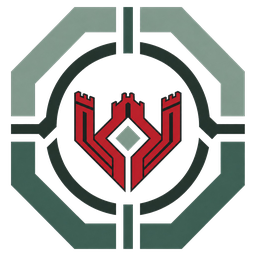
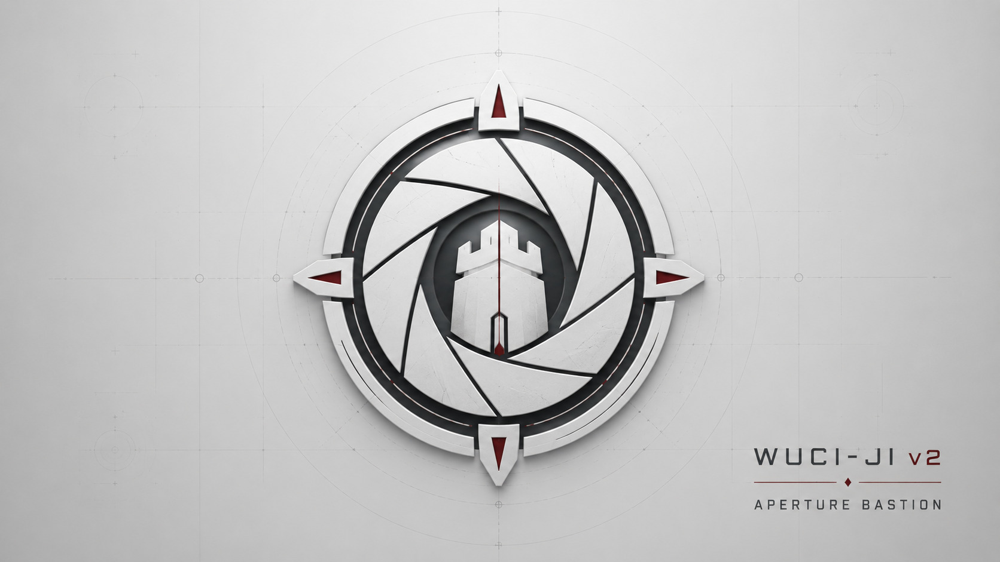

Current Product Status
Standard candidate for evidence-bound claim integrity, release evidence, and conformance reporting.

Wuci-Ji
Roadmap, not approval
From research/proof artifact to evidence-bound security control plane and enterprise pilot-ready product candidate.
Standard candidate for evidence-bound claim integrity, release evidence, and conformance reporting.
Copyable CI workflow, deterministic conformance reports, product score, control maps, and vulnerability response.
Independent review, release packaging, operational hardening, and evidence for the exact product boundary claimed.
D9 only after actual external certification, authorization, or regulatory acceptance exists.
External validation is absent, runtime enforcement is future-gated, production cryptography is not claimed, and formal authority cannot be self-issued.
Usable standard status requires one-workflow adoption, automatic conformance reports, fail-closed release gates, control-map export, and unsupported-claim rejection.
Read default-standard criteria